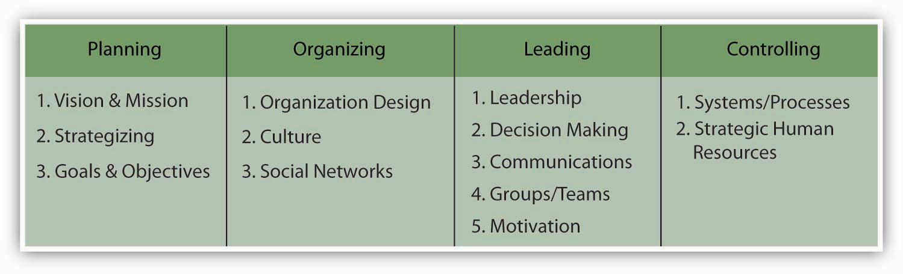

Reading this chapter will help you do the following:
Organizations, just like individuals, have their own personalities—more typically known as organizational cultures. Understanding how culture is created, communicated, and changed will help you to be a more effective manager. But first, let’s define organizational culture.
Figure 8.2 The P-O-L-C Framework
